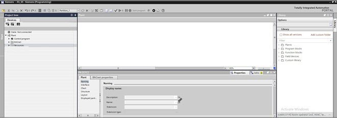
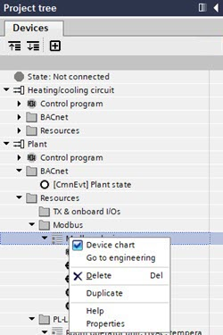
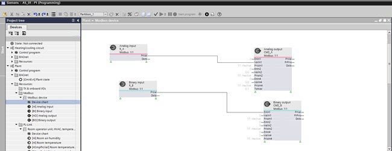

为 Modbus 接口创建和编程适配
1. Open the programming editor
- No Modbus device is available in the Plants navigation view.
- Go to Building > Building structure.
- Right-click the device and select Go to engineering.
- Open the Modbus task.
- The Modbus area opens.
- Open the Programming editor.
INFO: This can take a while. - The Programming editor opens, and an empty work area displays.

2. Use Device chart from the library
- A device chart in the library is available.
- Select the Library tab.
- Open the Custom Library folder and select the device.
- Drag the device to Plant > Resources > Modbus.
INFO: Do not clear the Device chart check box anymore. As soon as the Device chart check box is cleared, the device chart is deleted and the program is lost. When this happens, the Undo function must be used.
- The Device is created and ready for modification.
- The device and I/O configuration is visible in the Plants navigation view.
3. Define object references to the plant chart
工厂图表到设备图表的对象引用（反之亦然）取决于相应的应用程序功能。
- Select the function block in the plant chart.
- Drag a link to the prepared input function block in the device chart.
- Make required changes to the device chart as required.
Create a device chart and save it to the library
- A Modbus network and Modbus device are available.
- (Optional) I/O data points are created.
- Go to Building > Building structure.
- Right-click the device and select Go to engineering.
- Open the Modbus task.
- Open the Programming editor.
INFO: This can take a while. - The Programming editor opens, and an empty work area displays.
- In the Project tree select the Devices tab.
- Select Plant > Resources > Modbus > Modbus device.
- All configured BACnet objects are displayed in the Project tree.
- Right-click the Modbus device and select the Device chart check box.

- An empty device chart opens.
- Programming and configuring your device chart in the Plant > Modbus device area.

- Save the device chart to the Custom library.